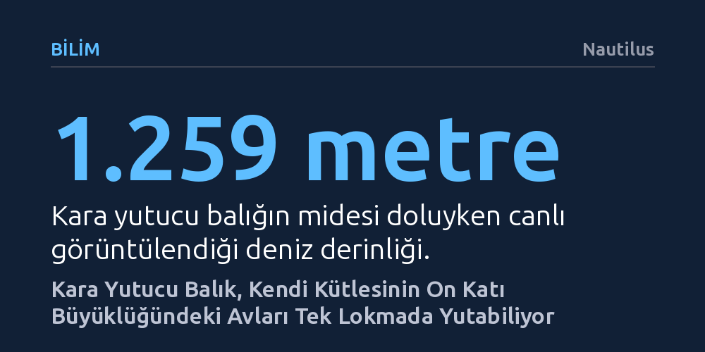

BILIM · Nautilus · 2026-10-16
Derin deniz araştırmacıları, boyunun dört, kütlesinin ise on katı büyüklüğündeki avları tek lokmada yutabilen kara yutucu balığını 1.259 metre derinlikte canlı ve midesi doluyken görüntüledi. Çenesini yerinden çıkarıp midesini balon gibi şişirebilen bu tür, aşırı beslendiğinde sindirim gazları nedeniyle yüzeye fırlayıp ölebiliyor.
Besin kıtlığının hüküm sürdüğü derin okyanuslarda canlıların hayatta kalabilmek için ölümcül riskler barındıran aşırı evrimsel uyumlar geliştirdiğini gösteriyor.

Karayipler'deki Trinidad ve Tobago açıklarında yürütülen kapsamlı bir derin deniz seferi, alacakaranlık kuşağının karanlık sularında sıra dışı bir ana tanıklık etti. Schmidt Ocean Institute'a ait Falkor gemisinden yönlendirilen uzaktan kumandalı sualtı aracı (ROV), deniz yüzeyinin yaklaşık 1.259 metre altında, midesi devasa bir avla tıka basa dolu halde yüzmeye çalışan canlı bir kara yutucu (Chiasmodon niger) kaydetti.
Bugüne kadar çoğunlukla ölü olarak su yüzeyine vuran ya da ağlara takılan bu canlıyı doğal ortamında ve beslenmiş vaziyette canlı gözlemlemek son derece nadir bir fırsat sunuyor. Elde edilen görüntülerde, avcının midesinin tıpkı tavşan yutmuş bir yılan gibi gerildiği ve derisinin incelerek neredeyse saydam bir pencereye dönüştüğü açıkça izlenebiliyor.
Kara yutucu balıklar ortalama 10 ila 20 santimetrelik mütevazı bir boyuta sahiptir. Ancak bu ufak cüsse, kendi uzunluğunun dört katına ve kütlesinin on katına kadar ulaşabilen diğer balıkları avlamasına engel teşkil etmez. Balık, avını bütün halde yutabilmek için çene eklemlerini adeta yerinden çıkarır ve elastik mide duvarını devasa bir balon gibi genişletir.
Canlı olarak yakalanıp gemide incelenemediği için kameraya yansıyan bu bireyin son öğününde hangi türü yediği tam olarak teşhis edilemedi. Seferin baş araştırmacısı Diva Amon, gemide tomografi cihazı bulunmadığından "bu ufaklığın öğle yemeğinde ne yediği gizemi belki de hiçbir zaman çözülemeyebilir" sözleriyle derin deniz araştırmalarının karşılaştığı teknik sınırları vurguluyor.
Besin kaynaklarının son derece seyrek olduğu derin denizlerde karşısına çıkan ziyafet fırsatını kaçırmamak hayati bir avantaj sağlar. Ne var ki kara yutucunun bu doymak bilmez iştahı çoğu zaman kendi sonunu hazırlar. Avcı kapasitesinin çok üzerinde bir av yuttuğunda, sindirim hızı avın mide içinde çürüme ve gaz üretme hızına yetişemez.
Midede biriken sindirim gazları balığı hızla şişirerek kontrolsüz biçimde su yüzeyine doğru fırlatır. Yüzeye çıkan balık, basınç ve sıcaklık farkına dayanamayarak midesindeki avla birlikte can verir. Bilim insanlarının sosisli yeme yarışmasına benzettiği bu aşırı beslenme davranışı, derin denizde hayatta kalma taktiklerinin ne denli tehlikeli bir bıçak sırtında ilerlediğini ortaya koyuyor.